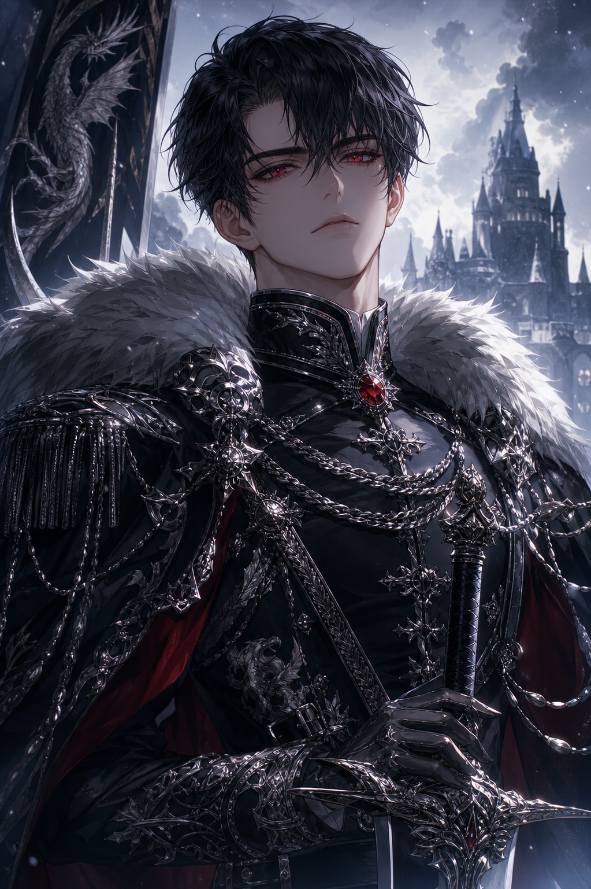
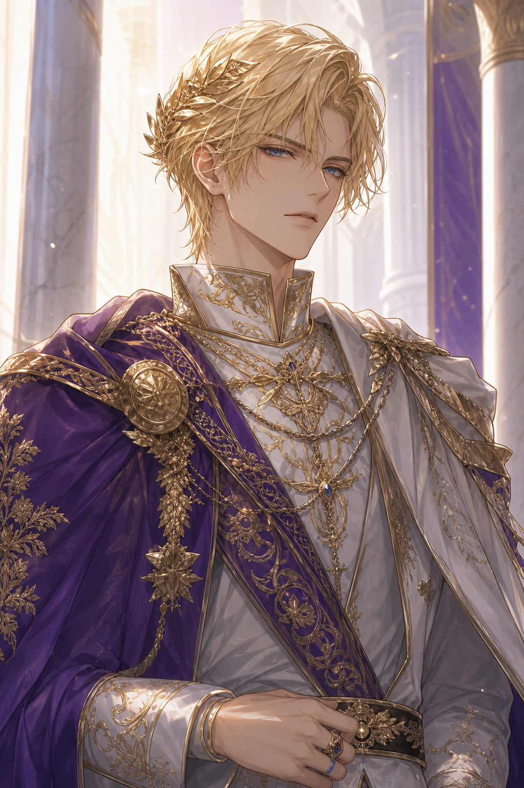
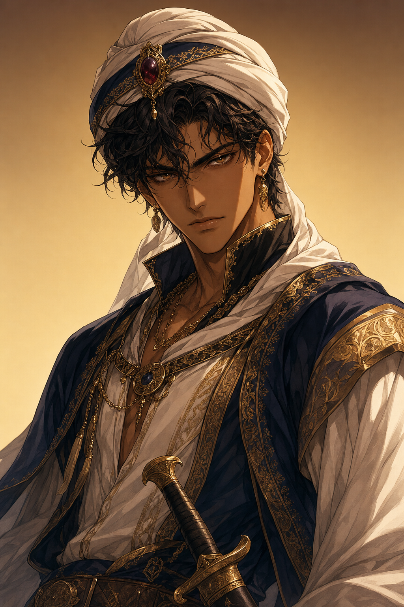
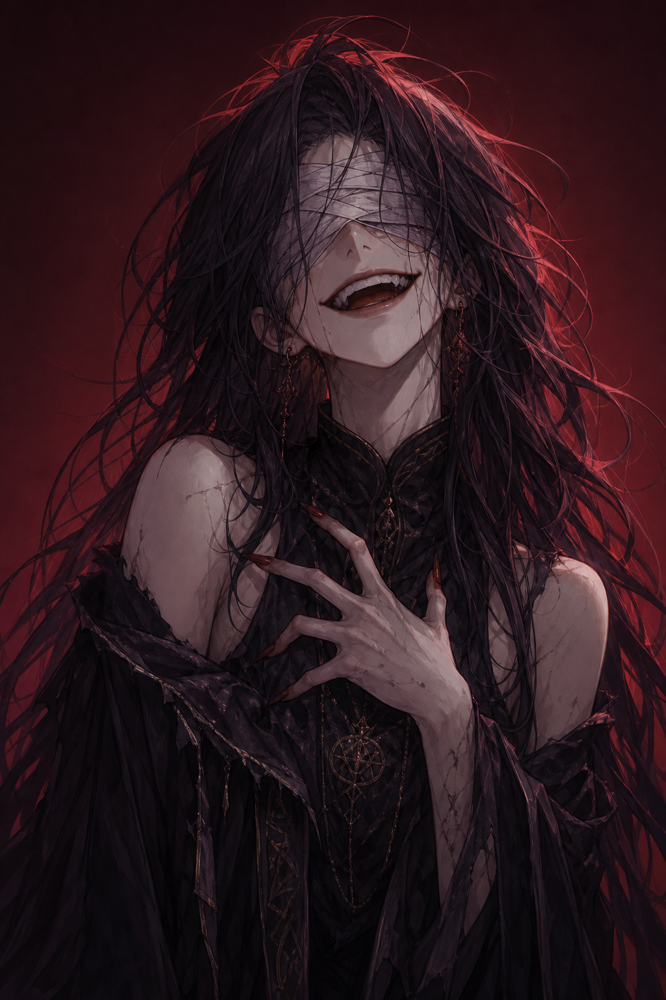
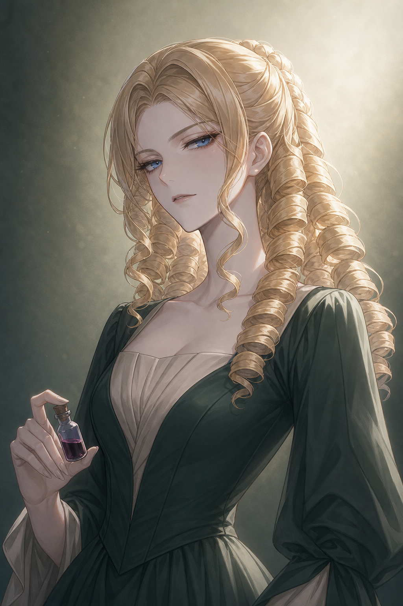
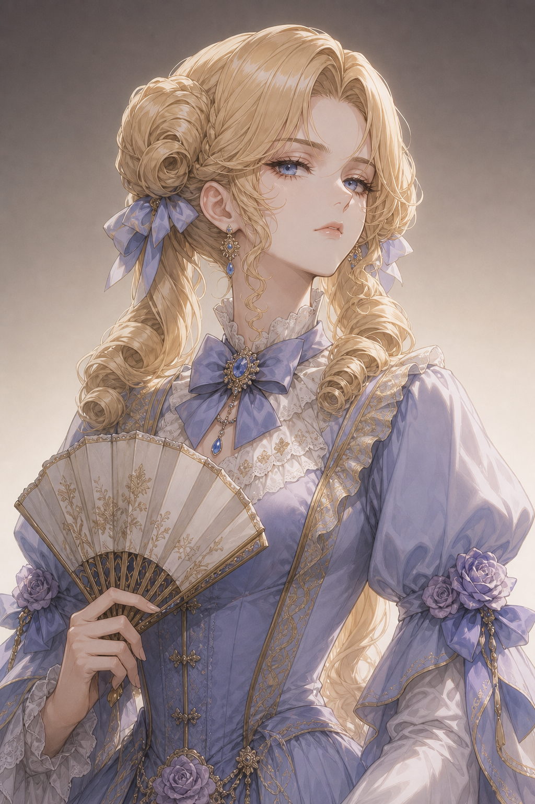
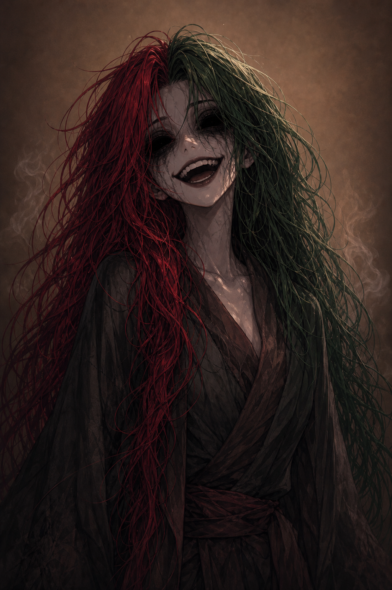
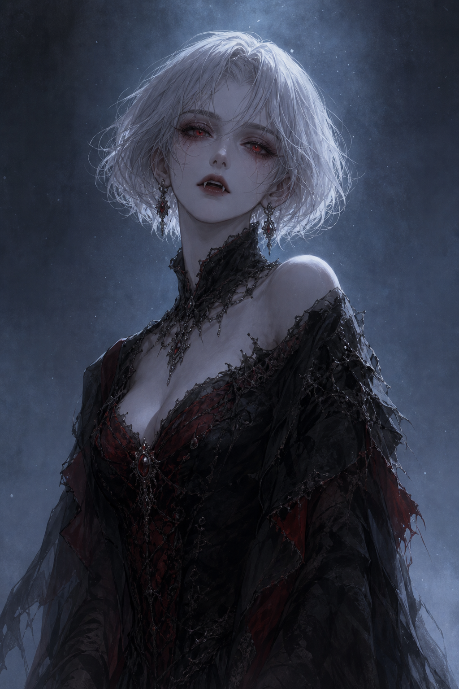
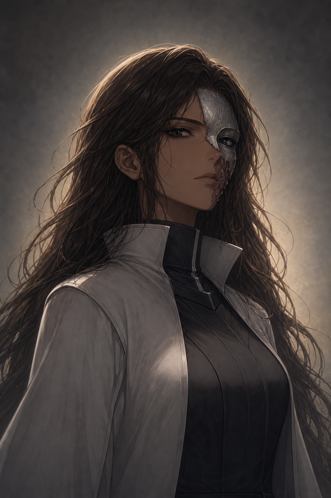
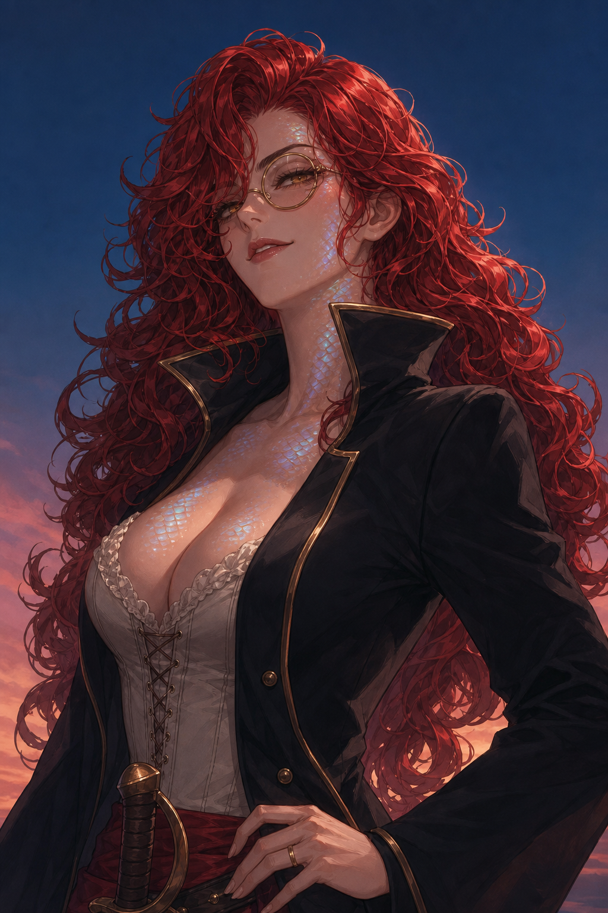

목차
Introduction
01게임 개요와 목표
빙의한 조연 악녀가 되어 살아남고, 나만의 결말을 완성하는 전략 게임
「판 로만티카의 소녀」는 로맨스판타지 부문 최고의 베스트셀러 소설이다. 플레이어는 이 소설 속에서 주인공 잔느에게 처단당할 운명인 조연 악녀 8인 중 하나에 빙의한다. 목표는 단 하나 — 운명을 거슬러 살아남고, 자신에게 맞는 엔딩 조건을 완성하는 것.
🗺️ 이동 & 탐색
대륙을 이동하며 능력·물건·금화 카드를 모은다. 지역마다 세력과 규칙이 다르다.
⚡ 각성
같은 능력 카드를 모아 고유능력을 각성한다. 대부분의 엔딩에 필수 조건.
💘 만남 & 모략
남주와 사랑을 키우거나, 경쟁 악녀·빌런을 모략으로 처치하며 판을 흔든다.
다섯 가지 엔딩
| 엔딩 | 한 줄 요약 |
|---|---|
| 노멀엔딩 “나는 살아있다” | 최후의 1인 생존 + 각성 + 모든 빌런 처치 |
| 해피엔딩 “저 오늘 결혼해요” | 생존 + 각성 + 남주와 결혼 + 그 남주 통치권 빌런 제거 |
| 군림엔딩 “짐의 발 앞에 조아리거라” | 생존 + 각성 + 과거 단서 3개↑ + 극동의 황제 증표 + 황제 선언 |
| 승천엔딩 “본녀는 세계의 진실을 깨달았도다” | 각성 + 세계 진실 물건 4종↑ + 아카데미에서 승천의 문 소환 |
| 멸망엔딩 “내가 가질 수 없다면 부숴버릴거야” | 전원 사망 시, 빌런 포인트 최다 획득자 승리 |
각 엔딩의 정확한 조건은 §13 엔딩 참고.
World
02세계관과 대륙 지도
판 로만티카 — 지역마다 세력과 규칙이 다른 대륙
| 코드 | 지역 | 특징 |
|---|---|---|
| E | 중부 — 아카데미 | 대륙의 중심, 중앙 마탑. 잔느의 시작점. 지하에 승천의 문. 탐색 불가 · 수행 3장 |
| D | 북부 — 프로스트하임 공국 | 설원, 영원의 관. 대공자 지크프리트의 땅 |
| — | 북동부 — 이제벨의 자유도시 | 겉은 자유도시, 실은 악마숭배자의 소굴. 이동 불가(일러스트로만 존재) |
| C | 남부 — 루멘교 왕국연합 | 교회·왕국연합. 조반니의 활동지. 빈사 치료 가능 |
| A | 동부 — 율리우스 제국 | 황가와 음모의 땅 |
| F | 동부 바다 | 대해적 그레이스의 시작점. 극동으로 가는 유일한 관문 |
| B | 서부 — 무법지대 | 척박한 싸움터, 투기장 |
| G | 극동의 섬 | 대륙 밖. 황제의 증표(군림엔딩). 동부 바다로만 진입 |
인접 관계 & 거리표
거리표는 최단 이동 횟수 = 소모 금화이며, 이동 비용과 남주의 잔느 추종 우선순위 판정에 쓰인다.
인접 지역
- A 동부 — C, D, E, F
- B 서부 — C, D, E
- C 남부 — A, B, E
- D 북부 — A, B, E
- E 중부 — A, B, C, D
- F 동부 바다 — A, G
- G 극동의 섬 — F
거리표 (금화 소모)
| A | B | C | D | E | F | G | |
|---|---|---|---|---|---|---|---|
| A | – | 2 | 1 | 1 | 1 | 1 | 2 |
| B | 2 | – | 1 | 1 | 1 | 3 | 4 |
| C | 1 | 1 | – | 2 | 1 | 2 | 3 |
| D | 1 | 1 | 2 | – | 1 | 2 | 3 |
| E | 1 | 1 | 1 | 1 | – | 2 | 3 |
| F | 1 | 3 | 2 | 2 | 2 | – | 1 |
| G | 2 | 4 | 3 | 3 | 3 | 1 | – |
남주 통치권 ↔ 메인 빌런
각 지역은 한 명의 남주(통치권자)와 한 명의 메인 빌런이 대응한다. 해피엔딩의 “통치권 빌런 제거” 조건에 쓰인다.
| 지역 | 메인 빌런 | 남주 (통치권자) |
|---|---|---|
| 남부 | 남부의 꽃 루크레치아 | 조반니 데 메디치 |
| 북부 | 북부의 마녀 이제벨 | 지크프리트 폰 프로스트하임 |
| 서부 | 서부의 꽃 로욱시나 | 알렉 |
| 동부(제국) | 제국의 장미 메살리나 | 가이우스 프린켑스 투리누스 |
Cast
03등장인물
주인공 · 남주 4인 · 메인 빌런 4인 · 플레이어 캐릭터(서브 빌런) 8인
주인공 & 남주





플레이어 캐릭터 — 서브 빌런 8인
각 캐릭터는 원작에서 잔느에게 처단당하는 “원래 운명”, 반전이 담긴 “숨겨진 과거”, 그리고 그것을 밝히는 “과거의 단서” 물건 카드를 가진다.

원래 운명: 잔느를 천한 것이라 괴롭히다, 황실을 모독한 죄로 처형당한다.
숨겨진 과거 · 단서 (스포일러)
사실 적녀가 아니라 서녀였고, 그녀를 낳은 어머니는 유모였다. 유모는 본래 폐위된 태자의 여동생이자 황가 핏줄로 공작가에 숨어 지냈다.
단서: 유모의 일기 · 황가의 팬던트 · 양녀증서 · 폐태자의 편지
원래 운명: 메살리나의 수족으로 더러운 일을 처리하다 주인공 일행에게 죽는다.
숨겨진 과거 · 단서 (스포일러)
그녀의 피에는 반물질유전공학에 고통받은 선조의 아픔이 담겨 있다. 어둠친화 혈통을 이교도로 몬 교회에 마을이 몰살당했다. 태어나자마자 생이별한 오빠(벨)가 있으나 데이지는 그 존재조차 모른다.
단서: 메모리 칩 · 벨의 단검 · 교회 7094지부의 인명부 · 교황칙서(HAL·ZEN)

원래 운명: 로욱시나와 거래하다 배신당해 이단심문관에게 쫓기고, 아카데미에서 발각되어 죽는다.
숨겨진 과거 · 단서 (스포일러)
데이지와 같은 교회 7094지부 출신이자 동부 황가의 사생아. 로욱시나에게 정신개조를 당해 기억을 잃은 채 자신도 모르게 그녀를 돕고 있었다.
단서: 황가의 팬던트 · 벨의 단검 · 교회 7094지부의 인명부 · 약간 남은 망각포션
원래 운명: 이제벨의 유혹에 금단의 마법을 익혀 마탑의 척살령을 받고, 도망치다 토벌당한다.
숨겨진 과거 · 단서 (스포일러)
사실 반인반요 여우요괴로, 체질적으로 마력 대신 요력을 다룰 수 있다.
단서: 요마변환기 · 호요족의 기록 · 용사전기 · 백요잡서

원래 운명: 이제벨의 꾐에 넘어가 사람들을 학살하다, 북부대공의 첫째 공자에게 죽는다.
숨겨진 과거 · 단서 (스포일러)
대륙에 악명 높던 진조의 여왕 본인. 승천을 준비하다 용사에게 토벌당해 영원의 관에 봉인되었고, 이제벨이 진조의 전승으로 그녀를 깨웠다. 영혼이 마모돼 기억이 온전치 못하다.
단서: 진조의 전승 · 용사전기 · 백요잡서 · 영원의 관

원래 운명: 교회의 사냥개가 되어 무자비한 학살을 행하다 주인공 일행에게 토벌된다.
숨겨진 과거 · 단서 (스포일러)
본래 동부제국의 황녀. 메살리나의 음모로 악마숭배자의 딸로 낙인찍혀 기록말살형에 처해졌고, 루크레치아의 도움으로 남부에 정착했다. 검의 재능으로 성기사단장에 올랐다.
단서: 황가의 팬던트 · 폐태자의 편지 · 이교의 계약서 · 교황칙서(HAL·ZEN)
원래 운명: 루크레치아의 전담 성직자로 파견되어 악행을 저지르다, 분노한 주인공 일행에게 죽는다.
숨겨진 과거 · 단서 (스포일러)
사실 메살리나–루크레치아 거래의 희생자. 아버지는 시골 아낙과 결혼해 파문당한 추기경이었다. 아무것도 모른 채 교회로 돌아갔다.
단서: 이교의 계약서 · 교황칙서(HAL·ZEN) · 폐태자의 편지 · 추기경서임서

원래 운명: 아카데미 위장입학 중 황가·교회의 치부를 입수해 대륙공적선언·척살령을 받고 처단당한다.
숨겨진 과거 · 단서 (스포일러)
인어의 후손. 조상은 전설적 세이렌으로 용사에게 영원의 관에 봉인되었다. 인어의 비늘 또는 영원의 관을 접해 인어여왕의 피를 각성, 돈으로 “무엇이든” 사고파는 능력을 얻는다.
단서: 이교의 계약서 · 용사전기 · 영원의 관 · 인어의비늘
Components
04게임 구성품
카드 · 토큰 · 주사위
🃏 능력 카드 — 총 100장 · 뒷면 노랑
검 · 매력(부채) · 마법(지팡이) · 선혈(핏방울) · 신성(십자가) · 독약 · 어둠. 매력 40장, 나머지 각 10장.
📦 물건 카드 — 뒷면 파랑
단서 27장(과거의 단서) + 유물 13장(세계 진실 10 + 엘릭서 3) = 40장. 여기에 금화 40장을 더해 4개 지역 탐색 덱(각 20장)을 이룬다.
🗺️ 운명 카드 — 뒷면 검정
초/중/후반 각 16장(총 48장). 난이도와 무관하게 48장을 전부 사용, 막당 2장 소모 → 24막에 소진. 재앙 카드와 뒷면 디자인이 동일하다.
💀 재앙 카드 — 10종 각 1장 · 뒷면 검정
셋업 시 넣지 않고, 게임 중 악령의 징조로 운명 덱에 유입된다. → §11
💗 두근! 토큰 — 라이프
사랑·연민·상냥함 등 인간성의 집합. 플레이어와 NPC 서브빌런에 지급(개수는 난이도별, → §10). 남주·메인 악녀·잔느는 없음. 회복 수단 없음. 모두 잃으면 사망 → 악령. “두근! 토큰”과 “두근! 포인트”는 같은 자원.
👿 빌런 토큰 (= 빌런 포인트)
암살 성공 시마다 1개 획득. 용도① 운명 저항력(카드 1장 강제력 회피), 용도② 멸망 엔딩 승점·타이브레이커.
🪙 금화 — 총 60장
40장은 탐색 덱에 10장씩 분산, 20장은 세계은행연합 보유. 이동·거래로 지불된 금화는 세계은행연합으로 귀속되고, 덱 고갈 시 2장씩 다시 시장에 풀린다.
🎴 기타
시나리오 카드 3장(서막) · 남주 이상형 카드 20장(뒷면 분홍) · 조우 토큰 9종 36개 · 해골 카드 40장(악령 전용) · 6면체 주사위 1개.
지역별 탐색 덱 (4개)
동·서·남·북 각 지역에 독립된 20장 덱(물건 10 + 금화 10)이 있다. 리셔플하지 않는다 — 탐색을 반복할수록 그 지역의 물건/금화 비율이 틀어지는 것이 의도된 설계다. 덱이 고갈되면 세계은행연합의 금화 2장을 보충하므로, 단서·유물은 게임 전체에서 유한하다.
Setup
05셋업 절차
게임 시작 전 준비
- 시나리오 덱 구성 — 선택한 난이도 배분에 맞춰 운명 카드로 초/중/후반 덱을 만들고, 각 구간 덱 맨 위에 시나리오 카드를 1장씩 올린다.
- 탐색 덱 구성 — 물건 40장을 10장씩 4묶음으로 나누고 각 묶음에 금화 10장을 넣어 동·서·남·북에 1덱씩(각 20장) 배치한다.
- 캐릭터 배정 — 플레이어는 랜덤으로 캐릭터를 배정받는다. 선택되지 않은 캐릭터는 시작 지점에 NPC로 배치.
- 선 플레이어 결정 — 전원 주사위를 굴려 가장 낮은 눈이 선. 동점자는 재굴림. 진행 방향(시계/반시계)은 선이 정한다.
- 초기 자원 배분 — 난이도·캐릭터·순번에 따라 배분. 두근! 토큰은 난이도로 결정(플레이어 5~1개 / NPC 서브빌런 0~2개, → §난이도). 순번 3·4위는 빌런 포인트 1점 또는 능력 카드 1장 추가 중 택1.
- 이상형 카드 세팅 — 각 남주에게 이상형 카드를 랜덤 3장씩 뒷면으로 배치.
- 시나리오 개시 — 초반부 시나리오 카드를 낭독하고 게임을 시작한다.
Game Flow
06게임 진행 — 막(라운드)
게임은 총 24막. 매 막 운명 카드 2장이 소모된다.
- 플레이어 행동 — 선 플레이어부터 진행 방향 순서대로, 각자 자기 차례에 행동 2개를 수행한다. (빈사 상태면 1개, 여론악화면 수행·탐색만)
- 운명 카드 공개 — 막의 마지막 순번 플레이어가 자기 차례를 마친 뒤, 운명 카드 2장을 오픈해 순서대로 적용한다.
- 라운드 종료 처리 — 잔느 최종 위치 기준으로 “남주의 잔느 추종”을 판정하고, 지속형 재앙도 이때 처리한다.
- 막 종료 & 선 교대 — 방금 운명 카드를 오픈한 마지막 순번 플레이어가 다음 막의 선이 된다.
시나리오 카드 & 막 정합성
- 시나리오 카드(서막)는 운명 카드 48장과 별개인 3장. 각 구간 덱 맨 위에 놓이며, 나오면 낭독만 하고 막을 소모하지 않는다 — 이어서 운명 카드를 뽑는다.
- 재앙 카드를 뽑아도 막을 소모하지 않으므로 운명 카드를 1장 더 뽑는다. 이로써 총 24막이 유지된다.
종료 조건
다음 중 먼저 발생하는 시점에 종료된다.
- 시나리오 종료 — 운명 카드가 모두 소진
- 엔딩 달성 — 어떤 플레이어가 엔딩 조건 충족
- 멸망 엔딩 — 모든 플레이어 사망 (해당 막을 끝까지 진행 후 종료)
NPC 운용
주인공 잔느와 미선택 플레이어블 캐릭터 전원은 운명 카드의 지시로만 이동·행동한다. 게임 내 자율 행동 주체는 없다(아래 남주 추종만 예외).
남주의 잔느 추종 (라운드 종료 처리)
잔느가 있는 지역에 남주가 한 명도 없으면, 라운드 종료 시 남주 1명이 잔느 지역으로 이동한다. 우선순위: ① 잔느와 약혼한 남주 → ② 없으면 거리가 가장 가까운 남주 → ③ 거리가 같으면 해당 남주 전원 이동.
잔느와의 조우
운명 카드 자체가 플레이어와 잔느가 마주치도록 설계되어 있다. 플레이어가 잔느 지역으로 이동하거나, 잔느가 플레이어 지역으로 이동한 시점에 판정한다.
| 조우 시점의 상태 | 결과 |
|---|---|
| 첫 번째 조우 | 아무 일도 일어나지 않는다 (첫 만남) |
| 두 번째 이후의 조우 | 여론악화 상태가 된다 |
이미 여론악화 상태 | 현상수배 상태가 된다 |
이미 현상수배 상태 | 강제로 잔느에게 모략을 시도한다 |
선 순서 / 승자 판정
선 플레이어 교대
이전 막의 가장 마지막 순번이었던 플레이어가 다음 막의 선이 된다. 진행 방향은 선이 정한다.
동시 달성 시 승자
- 빌런 포인트가 더 많은 쪽
- 동률이면 남은 두근! 포인트가 더 많은 쪽
- 그것도 동률이면 먼저 조건을 달성한 쪽
Actions
07플레이어 행동
자기 차례마다 행동 2개를 선택해 수행한다
① 이동
이웃한 지역으로 이동. 금화 1장 소모.
② 탐색
주사위: 1–2 능력 카드 1장 · 3–5 물건 카드 1장 · 6 물건 2장 또는 능력 2+물건 1.
③ 수행
능력 카드 2장을 뽑는다. 아카데미에선 3장.
④ 각성
같은 능력 카드 5장을 내고 고유능력 획득. 특수 고유능력이 가능하면 반드시 그렇게 한다. → §9
⑤ 만남
매력 카드 1장으로 남주의 이상형 카드 1장을 오픈.
⑥ 모략
빌런·남주·플레이어·잔느 대상. 같은 능력 카드 2~5장 사용. → 아래
⑦ 거래
같은 지역 플레이어와 금화 5개를 걸고 물건 카드 거래. → 아래
⑧ 약혼
이상형 카드가 1장 이상 오픈되면 조건을 만족해 약혼. → 아래
모략
같은 능력 카드를 최소 2장, 최대 5장 사용해 시도한다. 주사위 눈과 사용한 카드 장수를 비교한다.
| 주사위 vs 카드 장수 | 결과 |
|---|---|
| 사용 장수 초과 | 발각 — 두근! 1 잃고 현상수배 |
| 사용 장수 미만 | 처단 — 여론악화가 되며 해당 빌런 처치(카드 획득) |
| 사용 장수와 같음 | 암살 — 해당 빌런 처치 |
| 사용 장수 | 발각 | 처단(암습) | 암살 |
|---|---|---|---|
| 2장 | 4/6 | 1/6 | 1/6 |
| 3장 | 3/6 | 2/6 | 1/6 |
| 4장 | 2/6 | 3/6 | 1/6 |
| 5장 | 1/6 | 4/6 | 1/6 |
상대별 특례
- 남주 — “처단” 시
현상수배가 된다. - 플레이어 — “처단” 대신 “암습”(상대 능력 카드 2장 무작위 파괴). “암살”은 상대가 두근! 보유 시 두근! 1 잃고
빈사, 없으면 사망 → 악령. - 잔느 — 운명의 가호: 잔느는 절대 죽지 않는다. 성공 분기가 없어 빌런 포인트도 못 얻고, 결과는 페널티 경중으로만 갈린다.
| 잔느 상대 · 주사위 vs 장수 | 결과 | 효과 |
|---|---|---|
| 초과 | 역공 | 두근! 2 잃음 |
| 미만 | 반격 | 두근! 1 잃음 |
| 같음 | 조용한 실패 | 아무 일 없음 |
카드를 5장 투입해도 무피해 확률은 1/6. 리코리스 난이도(시작 두근! 1)에서는 강제 모략 한 번으로 5/6 확률로 사망한다.
거래
같은 지역 플레이어에게 금화 5개를 걸고 제안한다. 대상자는 반드시 응해 물건 카드 1장을 보여준다. 총 지출은 항상 5개.
| 제안자 선택 | 금화 정산 | 결과 |
|---|---|---|
| 수락 | 암상 수수료 2 + 대상자 3 | 해당 물건 획득 |
| 거절 | 수수료 2만 지불, 3 반환 | 아무 일 없음 |
| 거절 후 파괴 의뢰 | 5개 전부 소모(2+3) | 암상이 물건 파괴 |
약혼 & 결혼
- 남주의 이상형 카드가 1장 이상 오픈되면, 그 조건을 만족하도록 능력·물건을 소모해 약혼한다.
- 약혼 후 10막이 지난 뒤 해피엔딩 조건을 충족하면 그 막 종료 시 결혼 엔딩으로 승리.
- 이미 약혼한 다른 플레이어가 있으면, 이상형 카드를 추가 오픈하고 그 조건까지 만족해 파혼시키고 자신이 약혼할 수 있다.
팜므파탈을 각성하지 않은 플레이어는 2명 이상의 남주와 동시 약혼 불가.
Status Effects
08상태이상
빈사 · 현상수배 · 여론악화
🩸 빈사
자기 턴에 행동 1개만 가능. 해제:
- 남부 교회에서 금화 3 치료
- 엘릭서 사용
빛의 사제·성녀치료
📜 여론악화
수행·탐색 외 행동 불가. 해제(행동 비용 없음):
- 금화 3 지불 — 처단 대상이 악녀/빌런이었음을 공표
- 고유능력으로 공표
🚨 현상수배
턴 시작 주사위 4 이상이면 같은 지역 상대에 따라 피해. 해제:
- 금화 5로 여론 조작 → 여론악화로
- 고유능력으로 여론 조작
- 원인이 빌런/플레이어면 그를 암살(잔느는 불가)
현상수배 — 턴 시작 피해 (주사위 4↑)
| 같은 지역의 상대 | 기본 | 잔느 동석 시 (2배) |
|---|---|---|
| 남주 | 두근! 1 감소 | 두근! 2 감소 |
| 메인 빌런 | 능력 2장 또는 물건 1장 버림 | 능력 4장 또는 물건 2장 버림 |
| 여주(잔느) | “운명의 강제력” 발동 — 같은 지역 남주/빌런의 공격 효과가 2배 | |
남주 추종 규칙으로 잔느는 장기적으로 항상 남주와 동행한다. 리코리스 난이도에서는 잔느 동석 남주 판정 한 번으로 즉사할 수 있다.
Awakening
09각성과 고유능력
같은 능력 카드를 모아 고유능력을 얻는다 — 대부분의 엔딩에 필수
일반 고유능력 (6종 · 능력 카드 5장으로 각성)
| 고유능력 | 각성 재료 | 효과 |
|---|---|---|
| 팜므파탈 | 매력 5 | 남주와 “만남”에 필요한 능력 카드 수가 1씩 감소. 다중 약혼 허용. |
| 마리오네트 | 어둠 5 | 흑암 재앙 중 어둠 계열 효과 강화(+1). |
| 소드마스터 | 검 5 | 칼날 비·마수폭주 재앙에 유리/면역. |
| 빛의 사제 | 신성 5 | 빈사 치료, 돌림병·흑암 대응에 유리. |
| 마도사 | 마법 5 | 마법 계열 강화(마력폭발 재앙에는 취약). |
| 혈술사 | 선혈 5 | 선혈의 비 재앙에서 선혈 카드 획득. |
특수 고유능력 (해당 캐릭터만 · 일반 능력과 상호 배타)
특수 각성이 가능한 플레이어는 “각성” 행동 시 반드시 특수 쪽을 택한다. 누군가 대응하는 일반 능력을 먼저 각성하면 특수 각성이 봉쇄되고, 반대도 성립한다.
| 캐릭터 | 고유능력 | 각성 조건 | 특징 |
|---|---|---|---|
| 미호 | 요술사 | 마법 3 + 유물 “요마변환기” | 마법 토큰 2배 가치 · 마력폭발 재앙 면역(요력) |
| 제노비아 | 검성 | 검 4 | 칼날 비 면역 · 검 1장으로 암살 시도(실패해도 발각 안 됨) |
| 이레네 | 성녀 | 신성 5 또는 유물 “성상” 1 | 치유 · 흑암 액션 2로 해제 |
| 바토리 | 진조 | 선혈 4 | 선혈 계열 강화 |
| 그레이스 | 만물금본 | 금화 5 → 일반 각성 중 택1 | 돈으로 각성을 “구매” |
| 마리 | 독술사 | 독 5 | 독 계열 특화 |
Difficulty
10인원과 난이도
최대 4인 · 난이도 5단계(꽃 이름, 쉬움 → 어려움)
플레이어블 캐릭터는 8종이지만 동시 플레이는 최대 4명. 나머지는 시작 지점에 고정된 NPC 서브빌런으로 남아 운명 카드로만 움직인다. 시나리오 덱은 난이도와 무관하게 초/중/후반 각 16장(총 48장) 고정이라 모든 판이 세 구간 서사를 전부 전개한다. 난이도 차이는 오직 두근! 토큰 개수에서 온다.
| 난이도 | 플레이어 시작 두근! | NPC 서브빌런 시작 두근! |
|---|---|---|
| 🌼 데이지 (가장 쉬움) | 5 | 0 |
| 🌸 릴리 | 5 | 1 |
| 🌹 로즈 | 3 | 1 |
| 🌺 아네모네 | 2 | 1 |
| 🥀 리코리스 (가장 어려움) | 1 | 2 |
쉬운 쪽일수록 내 두근!이 넉넉하고 NPC는 두근!이 없어 손쉽게 정리된다. 어려운 쪽일수록 내 두근!은 1개뿐이고 NPC 서브빌런이 두근! 2개를 깔고 시작해 오래 버틴다.
Fate & Omens
11운명 카드 · 재앙
잔느를 중심으로 펼쳐지는 메인 시나리오와, 판을 뒤흔드는 10가지 재앙
운명 카드 (초반부 예시)
매 막 마지막 순번 플레이어가 2장을 오픈해 적용한다. 초반부 대표 카드:
- 주인공의 각성 “어라… 이 힘은?” — 주사위로 잔느가 능력을 얻는다(1 팜므파탈 … 6 혈술사).
- 내가 일을 하나 맡기려고 하는데 — 가장 가까운 악녀의 조우 토큰 획득. 모든 악녀 토큰을 모으면 암살 의뢰(행동 비용 없는 모략).
- 제노비아/이레네/데이지, ○○해 — 해당 NPC 악녀가 같은 지역 캐릭터에게 모략·상태이상을 건다.
- 앗, 남주다! — 가장 가까운 남주의 조우 토큰 획득(선부터).
- 주인공, 잔느 등장! — 잔느가 대륙을 순회한 뒤 아카데미로 돌아온다. (남주 추종 규칙 발동 트리거)
중반부(악녀 4인방 공세·남주 꼬드김·원작 진행)와 후반부(원작 청산·세계 진실 개봉·엔딩 레이스) 덱도 각 16장으로 확정. 재앙 “종막”이 발동하면 즉시 후반부 덱으로 넘어간다.
재앙 (Omens) — 10종 각 1장
셋업 시 넣지 않고, 게임 중 악령의 징조로 운명 덱에 섞여 유입된다(뒷면 동일). 운명 카드 흐름에서 뽑히면 즉시 발동한다.
| # | 재앙 | 유형 | 핵심 효과 | 대응 / 면역 |
|---|---|---|---|---|
| 1 | 선혈의 비 | 국지 | 지역 내 매 막 능력 카드 1장 버림 | 이탈로 회피 · 선혈 각성자는 선혈 1 획득 |
| 2 | 칼날 비 | 국지 | 능력 2/물건 1 버림 또는 두근! 1 | 소드마스터·검성 면역 |
| 3 | 돌림병 | 확산 | 감염 지역 행동 1개 제한 · 매 막 인접 확산 | 금화 3 또는 신성 2 봉쇄 · 빛의 사제·성녀 치유 |
| 4 | 흑암 | 전역 | 신성력 소멸(신성·빛의 사제·성녀 무효) | 신성 5 희생 / 사제 신성 3 / 성녀 액션 2 · 해제자 금화 2 |
| 5 | 마력폭발 | 전역 | 마법 카드·마도사 폭발 피해(마법 버림+두근! 1) | 미호(요술사, 요력) 면역 |
| 6 | 초태 몰살 | 전역 | 첫째 남주 전원 즉시 제거(만남/약혼 봉쇄) | 약혼한 남주만 두근! 2로 보호 |
| 7 | 마수폭주 | 국지 | 매 막 검 1장 판정, 실패 시 능력/두근! 손실 | 이탈로 회피 · 검 계열 유리 |
| 8 | 파리 | 이동 | 토큰 놓인 지역 물건 카드 1장 버림 | 신성 1로 무효 · 신성·성녀 유리 |
| 9 | 소멸 | 전역 | 무작위 지역 소멸(두근! 1+강제 이동, 없으면 사망) | — |
| 10 | 종막 | 메타 | 즉시 후반부 운명 카드 덱으로 전환 | — |
The Truth
12세계의 진실 (3층 구조)
표층 설정 너머에 숨겨진 진실 — 승천엔딩의 열쇠
세계 진실 물건 카드는 5종 각 2장, 총 10장. 서로 다른 4종 이상을 모으면 승천의 문 소환 조건을 채운다(같은 종류 중복은 1종으로 카운트).
축 1 — 고대 SF 문명
반물질유전공학과 기계지성 HAL이 존재했던 고대. 교회는 그 흔적을 ‘악마의 것’으로 규정해 말살해 왔다.
고대 연구소의 출입증 · HAL의 코어 파편
축 2 — 용사와 승천
진조의 여왕·세이렌을 봉인한 용사의 시대. 교황칙서의 말살 대상 “ZEN”은 기계가 아니라 용사의 후손을 가리킨다.
승천의 문 설계도 · 승천자의 허물
축 3 — 소설이라는 메타 진실
이 세계는 소설 「판 로만티카의 소녀」 그 자체다. 트럭에 치여 빙의한 것은 당신이 처음이 아니다.
이전 빙의자의 수기
Endings
13엔딩 — 승리 조건
자신에게 맞는 결말을 완성하라
🕊️ 노멀엔딩 — “나는 살아있다”
- 1명을 제외한 모든 플레이어 사망
- 생존자는 능력 각성 상태
- 모든 빌런이 처치된 상태
충족 시 즉시 멸망 시나리오 중단.
💍 해피엔딩 — “저 오늘 결혼해요”
- 생존 + 능력 각성
- 남주 한 명과 결혼(약혼 → 10막 경과)
- 그 남주 통치권의 빌런 제거
👑 군림엔딩 — “짐의 발 앞에 조아리거라”
- 생존 + 능력 각성
- 본인 과거 진실 단서 3개 이상 수집
- 극동의 땅에서 황제의 증표 획득
- 대륙으로 돌아와 황제 선언 후 1라운드 경과
✨ 승천엔딩 — “세계의 진실을 깨달았도다”
- 본인 캐릭터에 맞는 능력 각성
- 세계 진실 물건 4종 이상 수집
- 아카데미에서 승천의 문 소환 → 승천
💀 멸망엔딩 & 악령
플레이어가 사망하는 즉시 캐릭터 카드를 뒤집어 악령이 된다. 모든 플레이어가 사망하면 그 라운드를 끝까지 진행한 뒤 멸망 엔딩에 도달하며, 빌런 포인트 최다 획득자가 승리한다(악령도 사망 후 우승 가능). 단 멸망 외의 엔딩으로 끝나면 악령은 무조건 패배한다.
악령 전환 시 자산 처리
| 보유 자산 | 처리 |
|---|---|
| 능력 / 단서 / 유물 | 2장당 해골 카드 1장 (홀수 버림) |
| 금화 | 2장당 해골 카드 1장 (홀수 버림) |
| 두근! 토큰 | 남아 있다면 빌런 토큰으로 치환 |
| 오픈된 이상형 카드 | 공유 자산이므로 처리 안 함 |
| 각성한 고유능력 | 소멸 |
악령의 액션 (자기 차례 2번)
- 이동 — 다른 지역으로 이동
- 저주 (해골 1) — 같은 장소 플레이어의 능력 카드 무작위 1장 버림
- 사고기원 (해골 2) — 주사위 5↑이면 대상 플레이어가 두근! 1 잃음
- 악성악화 (해골 1) — 빌런 뒤에 겹쳐 둠. 겹친 수만큼 빌런 공격 회피 눈금↑ (1~2:3 / 3~5:4 / 6:5)
- 살인귀 — 빌런에 겹친 해골이 6장이면 7장 대신 그 빌런을 사고사 처리, 빌런 포인트 1 획득
- 절규 — 해골 카드 2장 획득
- 징조 (해골 5) — 재앙 카드를 운명 덱에 섞고, 빌런 포인트 1 획득
악령은 소멸하지 않으며 24막이 끝날 때까지 지속된다.